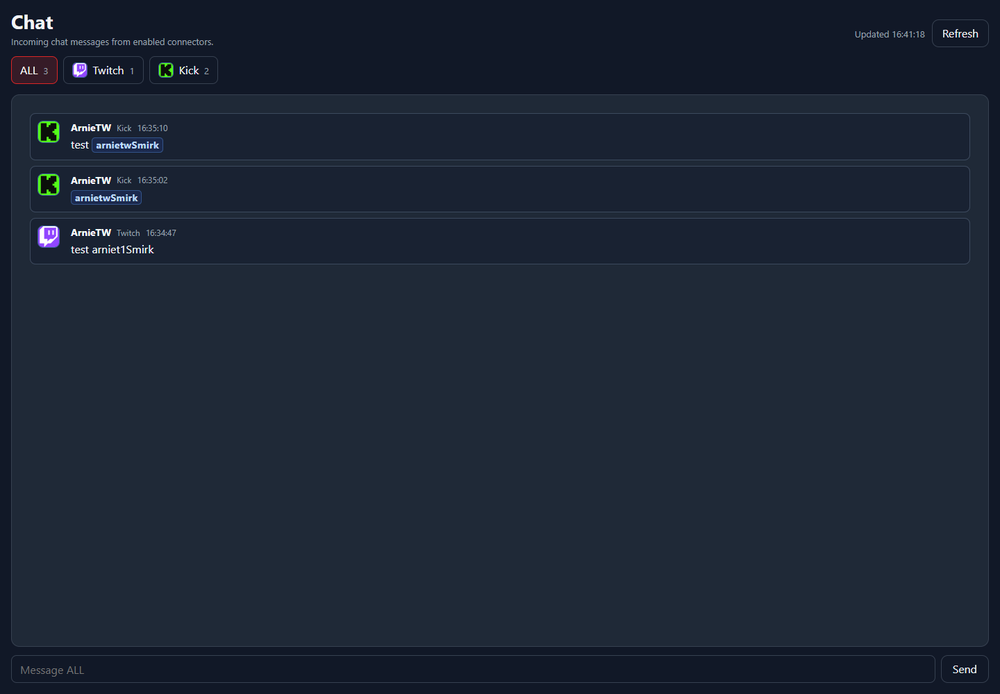

Setup Page
Chat
Chat is a local monitor for messages arriving through connected chat-capable connectors.
Chat Feed

The Chat page is useful for confirming that Twitch or Kick connectors are actually receiving messages before you bind those messages to command triggers or overlay boxes.
UI areaWhat it means
Chat tabsSwitch between connected chat sources when more than one platform is available.Message listShows recent messages received by NekoBot.RefreshReloads recent messages and connector state.Platform Tabs
Chat is driven by connectors. If no messages appear, check the matching Connector first, then confirm that the account is connected and enabled.
- Use Chat to verify incoming messages.
- Use Command Triggers to decide what NekoBot does when chat commands or connector events arrive.
- Use overlay boxes when those events should display text, media, TTS, or other sources on stream.